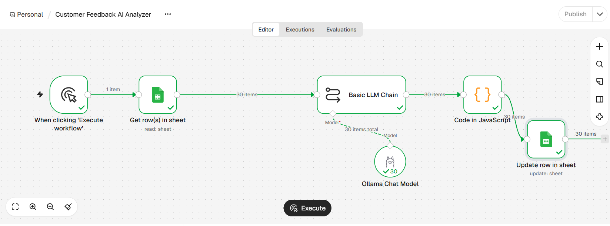
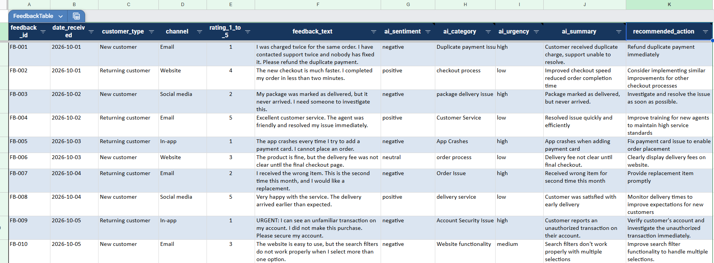
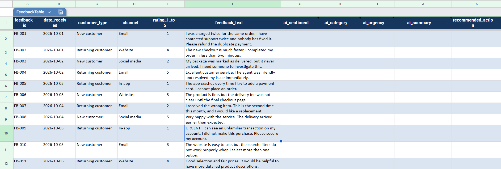
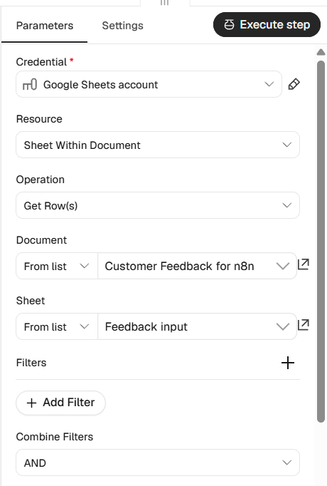
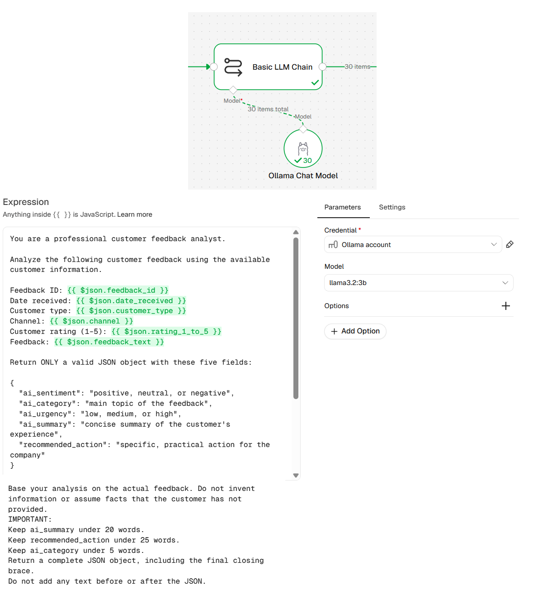
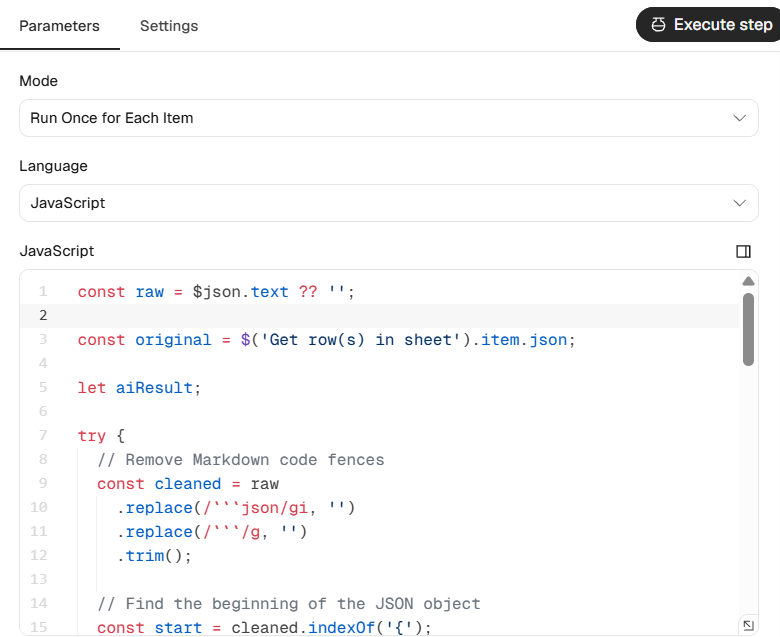
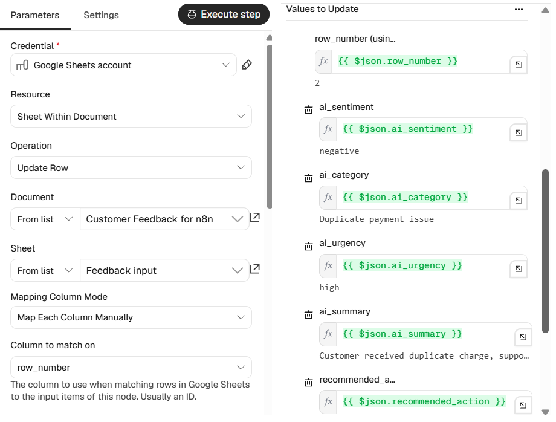

Customer Feedback AI Analyzer


Wykorzystane technologie i umiejętności
Technologie
n8n · Docker · Ollama · Llama 3.2 · Google Sheets · Google Cloud · JavaScript · JSON · OAuth 2.0
Umiejętności
Automatyzacja procesów · Integracja modeli LLM · Inżynieria promptów · Analiza sentymentu · Klasyfikacja tekstu · Przetwarzanie danych · Parsowanie JSON · Walidacja danych · Obsługa błędów · Uwierzytelnianie API
1. Opis projektu
Customer Feedback AI Analyzer to zautomatyzowany proces analizy opinii klientów z wykorzystaniem lokalnie uruchomionego dużego modelu językowego (LLM).
Projekt wykorzystuje n8n do orkiestracji procesu przetwarzania danych, Ollama do lokalnego uruchamiania modelu AI oraz Google Sheets jako źródło i miejsce docelowe danych.
Proces pobiera opinie klientów, analizuje każdy rekord z wykorzystaniem AI, klasyfikuje doświadczenia klientów, generuje zwięzłe podsumowanie i rekomenduje odpowiednie działanie biznesowe. Wygenerowane wyniki są następnie automatycznie zapisywane w odpowiadających im rekordach Google Sheets.
Główny cel: Automatyzacja analizy i klasyfikacji opinii klientów poprzez przekształcanie nieustrukturyzowanego tekstu w uporządkowane, praktyczne wnioski biznesowe.
2. Środowisko i konfiguracja techniczna
Przed stworzeniem procesu skonfigurowałam lokalne środowisko umożliwiające uruchomienie całego projektu bez korzystania z płatnych, chmurowych interfejsów API modeli AI.
Docker Desktop
- Instalacja i konfiguracja Docker Desktop.
- Wykorzystanie Dockera do uruchomienia samodzielnie hostowanej wersji n8n Community Edition w kontenerze.
- Konfiguracja mapowania portów umożliwiającego lokalny dostęp do interfejsu n8n.
- Utworzenie trwałego wolumenu Docker (n8n_data) do przechowywania konfiguracji n8n i danych procesów.
n8n Community Edition
- Lokalna instalacja i uruchomienie n8n pod adresem localhost:5678.
- Utworzenie konta i konfiguracja środowiska pracy.
- Wykorzystanie n8n jako centralnej platformy automatyzacji łączącej źródło danych, model AI i miejsce docelowe.
Ollama
- Lokalna instalacja Ollama.
- Pobranie modelu llama3.2:3b.
- Konfiguracja połączenia między n8n a Ollama z wykorzystaniem lokalnego endpointu API.
- Połączenie modelu Ollama Chat Model z n8n, umożliwiające analizę AI bez zewnętrznej subskrypcji API.
Technologie: Docker Desktop · n8n Community Edition · Ollama · Llama 3.2 (3B)
3. Przygotowanie zbioru danych

Projekt wykorzystuje fikcyjny zbiór danych zawierający 30 opinii klientów, przechowywany w Google Sheets.
Każdy rekord reprezentuje pojedynczą interakcję z klientem i zawiera następujące pola:
| Pole | Opis |
|---|---|
| feedback_id | Unikalny identyfikator opinii |
| date_received | Data otrzymania opinii |
| customer_type | Nowy lub powracający klient |
| channel | Kanał komunikacji (e-mail, strona internetowa, media społecznościowe itp.) |
| rating_1_to_5 | Ocena satysfakcji klienta |
| feedback_text | Oryginalna opinia klienta w języku naturalnym |
Utworzono również pięć dodatkowych kolumn przeznaczonych na wyniki analizy wygenerowane przez AI:
| Pole generowane przez AI | Przeznaczenie |
|---|---|
| ai_sentiment | Pozytywny, neutralny lub negatywny wydźwięk opinii |
| ai_category | Główny temat lub zidentyfikowany problem |
| ai_urgency | Niski, średni lub wysoki poziom pilności |
| ai_summary | Zwięzłe podsumowanie doświadczenia klienta |
| recommended_action | Sugerowane działanie dla firmy |
Oryginalne informacje o klientach zostały zachowane, natomiast pięć dodatkowych pól początkowo pozostawiono pustych, aby mogły zostać uzupełnione przez zautomatyzowany proces.
4. Tworzenie procesu automatyzacji
Automatyzacja została opracowana w n8n i podzielona na cztery główne etapy przetwarzania.
Krok 1. Pobieranie opinii klientów – Google Sheets
Google Sheets – Get Row(s) in Sheet
Pierwszy etap pobiera rekordy opinii klientów z wybranego dokumentu Google Sheets.

Aby skonfigurować połączenie, wykonałam następujące czynności:
- Utworzyłam projekt w Google Cloud Console.
- Włączyłam Google Sheets API oraz Google Drive API.
- Skonfigurowałam ekran zgody OAuth i zarejestrowałam swoje konto jako użytkownika testowego.
- Utworzyłam dane uwierzytelniające OAuth 2.0 z typem klienta Web Application.
- Skonfigurowałam autoryzowany adres przekierowania (redirect URI) udostępniony przez n8n.
- Dodałam Client ID i Client Secret do poświadczeń Google Sheets OAuth2 w n8n i autoryzowałam dostęp.
Po uwierzytelnieniu wybrałam dokument Google Sheets oraz konkretny arkusz zawierający zbiór danych.
Operacja Get Row(s) in Sheet pobiera rekordy opinii klientów, przekazując każdy wiersz do kolejnego etapu analizy AI jako osobny element procesu.
Krok 2. Analiza opinii z wykorzystaniem AI – Basic LLM Chain
Basic LLM Chain + Ollama Chat Model
Drugi etap odpowiada za właściwą analizę opinii klientów z wykorzystaniem AI.

Węzeł Basic LLM Chain został połączony z Ollama Chat Model, wykorzystującym lokalnie uruchomiony model Llama 3.2 (3B).
Opracowałam własny prompt instruujący model, aby pełnił rolę profesjonalnego analityka opinii klientów.
Prompt dynamicznie pobiera informacje z każdego rekordu Google Sheets za pomocą wyrażeń n8n (expressions), w tym:
- Feedback ID
- Date received
- Customer type
- Communication channel
- Customer rating
- Original feedback text
Model otrzymał instrukcję wygenerowania pięciu konkretnych wyników analitycznych w formacie JSON:
- Analiza sentymentu: Określenie, czy opinia klienta jest pozytywna, neutralna czy negatywna.
- Klasyfikacja kategorii: Identyfikacja głównego tematu opinii, np. problemu z płatnością, dostawą lub obsługą klienta.
- Ocena pilności: Przypisanie poziomu pilności: niski, średni lub wysoki.
- Podsumowanie tekstu: Wygenerowanie zwięzłego podsumowania doświadczenia klienta, ograniczonego do mniej niż 20 słów.
- Rekomendacja działania: Zaproponowanie konkretnej i praktycznej reakcji biznesowej, ograniczonej do mniej niż 25 słów.
Dodatkowe instrukcje w prompcie wymagały, aby model opierał analizę wyłącznie na informacjach przekazanych przez klienta, nie wymyślał faktów oraz zwracał wyłącznie kompletny obiekt JSON, bez dodatkowych wyjaśnień i formatowania Markdown.
Takie podejście zapewnia indywidualną analizę każdego rekordu klienta przy jednoczesnym zachowaniu spójnej struktury wyników.
Krok 3. Przetwarzanie i walidacja odpowiedzi AI – JavaScript Code
Code node – JavaScript
Trzeci etap przetwarza odpowiedzi wygenerowane przez AI i przygotowuje je do zapisania w Google Sheets.

Ponieważ LLM zwraca analizę w postaci tekstu, zaimplementowałam węzeł JavaScript Code, który przekształca odpowiedź w ustrukturyzowane dane. Kod JavaScript został wygenerowany przez AI.
1. Pobranie oryginalnego rekordu klienta
Oryginalne dane są pobierane z wejściowego węzła Google Sheets, dzięki czemu analiza wygenerowana przez AI pozostaje przypisana do właściwego rekordu opinii klienta.
2. Oczyszczenie odpowiedzi AI
Kod usuwa potencjalne znaczniki bloków kodu Markdown (```json oraz ```) i zbędne białe znaki z wygenerowanej odpowiedzi.
3. Wyodrębnienie i parsowanie JSON
Kod lokalizuje początek obiektu JSON, wyodrębnia odpowiedź i parsuje ją za pomocą metody JavaScript JSON.parse().
Dodatkowy etap walidacji sprawdza, czy odpowiedź kończy się zamykającym nawiasem klamrowym }. Jeśli go brakuje, kod dodaje go przed parsowaniem.
Rozwiązanie to odpowiada na problem napotkany podczas tworzenia procesu, gdy lokalny model LLM sporadycznie generował poza tym kompletne odpowiedzi JSON bez końcowego nawiasu klamrowego.
4. Walidacja wymaganych pól
Kod sprawdza, czy wszystkie pięć oczekiwanych pól jest obecnych:
- ai_sentiment
- ai_category
- ai_urgency
- ai_summary
- recommended_action
Jeśli którekolwiek wymagane pole jest nieobecne lub puste, odpowiedź zostaje oznaczona jako nieudana.
5. Połączenie oryginalnych danych z wynikami AI
W przypadku poprawnej odpowiedzi oryginalny rekord klienta zostaje połączony z pięcioma polami wygenerowanymi przez AI. Kod przypisuje również wartość processing_status równą success.
6. Obsługa błędów
Mechanizm try/catch zapobiega zatrzymaniu całego procesu w przypadku nieprawidłowej odpowiedzi AI.
Jeśli parsowanie lub walidacja zakończy się niepowodzeniem, rekord otrzymuje:
- processing_status: failed
- processing_error – opis błędu
- raw_ai_response – oryginalna odpowiedź wygenerowana przez AI
Dzięki temu nieudane rekordy mogą zostać zidentyfikowane i przeanalizowane bez utraty oryginalnych danych klienta.
Krok 4. Aktualizacja rekordów klientów – Google Sheets
Google Sheets – Update Row
Ostatni etap zapisuje wyniki analizy AI z powrotem w oryginalnym dokumencie Google Sheets.

Operacja Update Row wykorzystuje pole row_number do identyfikacji odpowiedniego rekordu klienta.
Węzeł został skonfigurowany do aktualizacji następujących kolumn:
- ai_sentiment
- ai_category
- ai_urgency
- ai_summary
- recommended_action
Oryginalne informacje o klientach pozostają niezmienione.
Dodatkowy warunek zapewnia, że do operacji aktualizacji trafiają wyłącznie rekordy ze statusem processing_status: success. Nieudane odpowiedzi są wykluczane z aktualizacji.
W rezultacie oryginalny zbiór danych zostaje wzbogacony o informacje analityczne wygenerowane przez AI bez konieczności ręcznej ingerencji.
5. Rezultaty projektu
Ukończony proces automatycznie analizuje opinie klientów i wzbogaca oryginalny zbiór danych o ustrukturyzowane informacje wygenerowane przez AI.
Projekt pokazuje, w jaki sposób lokalnie hostowane modele AI można zintegrować ze zautomatyzowanym procesem przetwarzania danych, aby ograniczyć pracę manualną i przekształcać nieustrukturyzowane opinie klientów w informacje wspierające podejmowanie decyzji biznesowych.
Najważniejsze rezultaty:
- Automatyczna analiza 30 fikcyjnych opinii klientów.
- Klasyfikacja sentymentu i pilności z wykorzystaniem AI.
- Automatyczna identyfikacja kategorii opinii.
- Zwięzłe podsumowania doświadczeń poszczególnych klientów.
- Rekomendacje potencjalnych działań biznesowych generowane przez AI.
- Ustrukturyzowana walidacja danych i obsługa błędów.
- Automatyczna aktualizacja oryginalnego zbioru danych w Google Sheets.
- Lokalne uruchamianie AI bez korzystania z płatnych zewnętrznych interfejsów API modeli LLM.